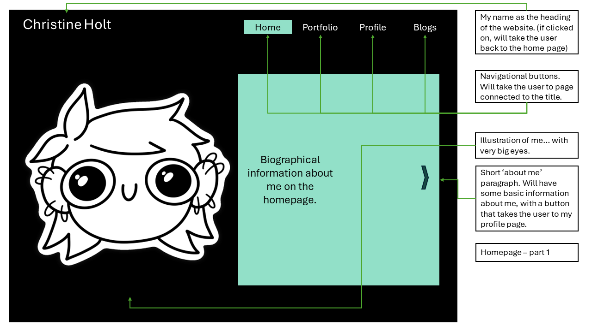
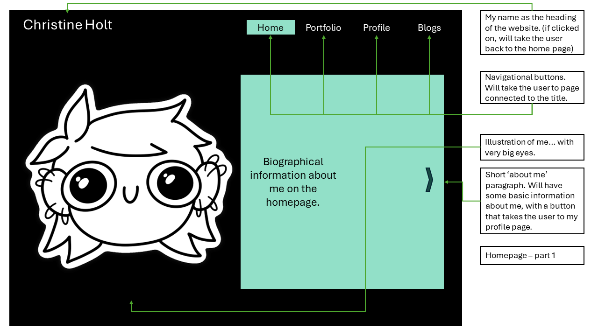

Design Log 5
Newest Design Sketches (Wireframes and colour block outs):
 

Notes:
- The illustration is to sprinkle some of my personality into this website.
- The homepage button in the navigation bar is mint green to make it stand out against everything else, as it is the most importants elemnt. All the main information will be found here, and the user will be able to travers from the homepage everywhere else.
- I want the website to open with a bit of information about myself, so the user knows what they are getting themselves into.
- I want the about section to have a button that takes the user to my profile page.
- I want the illustration and the square of information to slide in as the user scrolls down, to create some visual interest on the page.

Notes:
- This is the part of the homepage that displays the most recent additions to the portfolio page.
- I would like this to show an active engagement with the website from my side, as I will be adding the portfolio items as I go (I have not yet, but I mean more when I make a website one day that I will be sending to employers)
- I want these to display a screenshot and some main points about the items.
- The user will be able t click on these items and go to the page that gives further information on them.

Notes:
- This contact information will be found at the bottom of my Homepage (and probably on the other pages as well).
- I wanted these to be subtle, but still pop, so I want the squares to be forest green and the text to be light coloured. It is a little different from the rest of the page, and I feel that would make it pop for the reader.
- These will be links that will take the user to my profile on each of these sites.


Notes:
- Here each of my portfolio Items will be displayed with a name and a screenshot.
- When the user waves their mouse over the squares, I want them to flip and show a "more information" text, adn when they click it, it will take them to more information on the item.
- I wanted the colours to vary, to create some visual interest, but I did not want to go crazy so I strategically placed the colours.


Notes:
- This will be the page the individual portfolio items will be on.
- The heading formatting might change, I might increase the size of the text or put it in the square to make it pop more, but for now this works.
- The information on the piece will be placed on a mint green square to make it pop a bit more, as it is where the important infor will be found.

Notes:
- I wanted the profile page to also start out with the illustration of me, again to add some of my personality.
- There will be a bit more of an extensive paragraph on me in this section (It feels weird to write about myself, but I will have to here).
- I want these sections to get smaller once the user scrolls down to the rest of the page.

Notes:
- This section will show my CV.
- I want each of the items to be clickable, so when the user first opens the page, the CV information is shown in bullet points, but when they click it, it expands with more information.
- I wanted it to pop, so I put it on white squares, but I knew it would be busy with the information, so I decided I will not use a coloured square (this might change in the future).

Notes:
- For the index page of the blog posts I wanted to create visual interest, so i made a pattern with the colour scheme. I find it interesting to look at, but not overly busy.
- These elements will pop and grow in size when the cursor is waved over them.


Notes:
- The posts will be quite content heavy, so I did not want to go too ham on the colours.
- Many of these items have images included, so that will bring some visual interest as well.
- Again, I might change the heading format to make it pop more.
Some Final Over All Notes:
- These are all still subject to change, even though I know that these are the 'final' sketches. I know very well how plans can change very quickly, and we have not gotten to the CSS yet, so we will see how this works out.
- Many of the elements listed here I will be taking throughout the website for consistency, I was just mentioning them at the parts I found them most relevant.
- This is a bit of an expansion on the notes in the style guide and the notes on my aesthetic in previous logs.